|
WARNING!
Backup your data often! BACKUP your log directory at the end of EVERY session!
All that you need to backup and store in a safe place is the log database directory
located in the ~/.config/cqrlog/database folder, or you can enable the autobackup function
in Preferences. This autobackup function creates an ADIF file with a backup of your log.
|
CQRLOG for LINUX by OK2CQR & OK1RR

Statistics
There are 5 basic types of online statistics:
DXCC
The statistics can be viewed from both the login screen and the QSO list, however the menu
is slightly different. While the logging screen only allows viewing the statistics,
the QSO list can trigger a DXCC statistics rebuild.
| Logging screen |
QSO List |
| 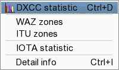
|
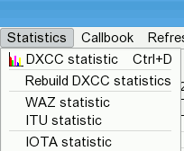 |
The main difference is that the 'Details' window can ionly be activated (if not activated
at program startup, see 'Preferences')
from the logging screen.
Statistics rebuilding is only possible
from the QSO list.
The only statistics which should be maintained are the DXCC ones. With the exception of
the footer of the DXCC detailed presentation, all DXCC scores are based on actual valid
contries on the current DXCC list, ie. NO deleted countries. Other
stats are computed while logging.
There are several presentations of DXCC statistics. A summary is displayed in the
QSO List, just above the table.
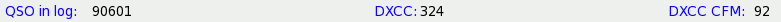
The detailed statistics are displayed from the logging screen by clicking on the
'Statistics' item of the upper menu bar.
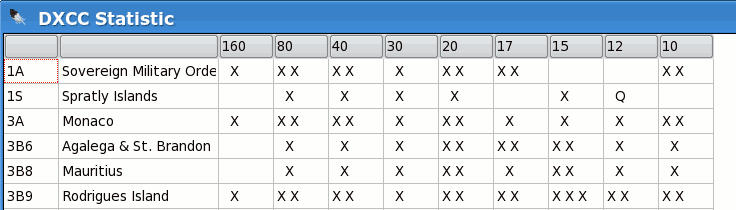
The 'X' denotes a worked country, the 'Q' a confirmed country, the 'L' a confirmed country by LOTW
and the 'E' a confirmed country by eQSL.
The order is PHONE - CW - DIGI. The example above shows, that Rodrigues,
3B9, has been worked on 30 metres CW only, on 20 and 17 metres CW and SSB and on 15 metres
CW, SSB and digital modes.
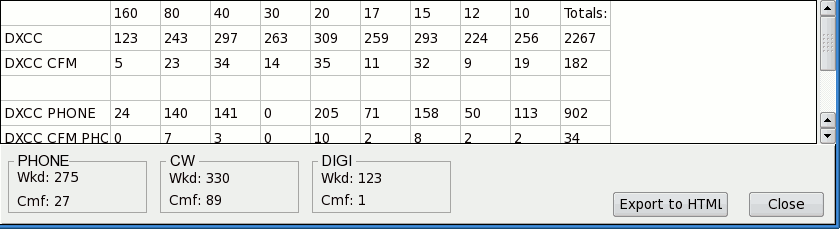
The summary footer shows your actual score band by band on all modes, worked and
confirmed separately. The 'Totals' column shows your band point score per DXCC
Challenge rules. The framed counts showing ALL TIME DXCC scores
with deleted countries. It is the only instance showing this.
The 'Export to HTML' button allows exporting of your whole statistics into a nicely
formatted HTML page. This is an exact copy of the detailed DXCC stats presentation,
including the footer with all-time scores.
WAZ and ITU Zones
Both statistics are similar and very simple.
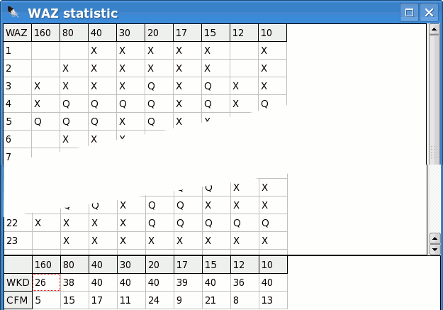
Again, the 'X' denotes worked, the 'Q' confirmed, the footer contains totals of worked
and confirmed zones, band by band.
IOTA
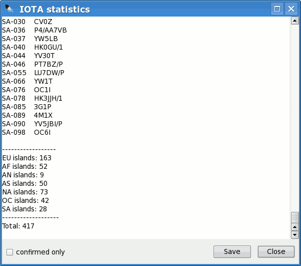
The IOTA statistics presentation is slightly different. An IOTA reference number and
the station worked (confirmed) is displayed. These statistics are derived from the IOTA
records of each logged contact. If a QSO record does not contain IOTA information but
the station is valid for IOTA, the statistics do not reflect this fact.
So update regularly!
The small check box in the left lower corner toggles the worked/confirmed scores.
The 'Save' button exports the statistics to an ASCII text file.
DOK
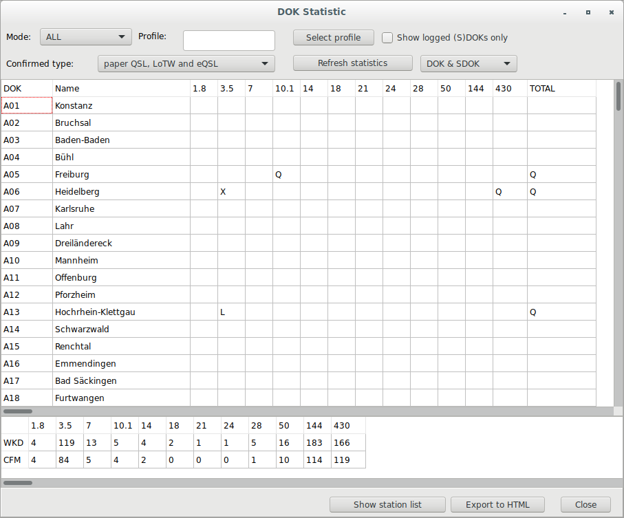
The DOK statistics give you an overview of your collected German DOKs.
These statistic is derived from the DOK field of each logged contact.
If a QSO record does not contain DOK information, the statistics do not reflect this fact.
To resolve the DOK into a readable name, please activate in menu preferences - program the setting "Check for newer version of DOK database after program startup". This will download dok.csv and sdok.csv files to ~/.config/cqrlog/dok_data
The option 'Show logged (S)DOKs only' will reduce the list, to show only worked DOKs and not all known DOks.
The ComboBox 'DOK & SDOK' give you the option to see DOK&SDOK, only DOK and only SDOK.
Caution: Be aware that the DOK statistic window will not open, when dok.csv and sdok.csv files are missing on ~/.config/cqrlog/dok_data.
The 'Export to HTML' button exports the statistics to a HTML table file.
The 'Show station list' button will show a list of all stations behind the selected and confirmed DOKs.
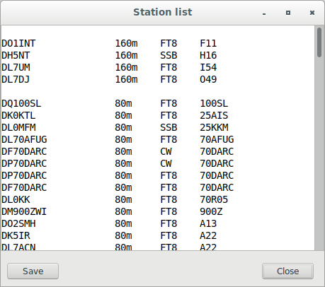
The BIG SQUARE and COUNTY gives you band based report of worked Squares or Counties.
With County the column filling must be excactly same with all similar counties. Count is based to compare and even one space in county name can make different results.
The 'Save to...' button exports the statistics to a HTML file.
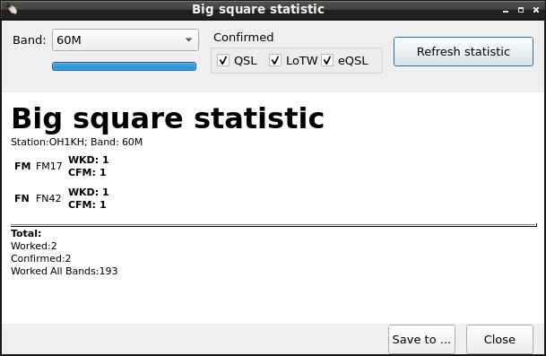
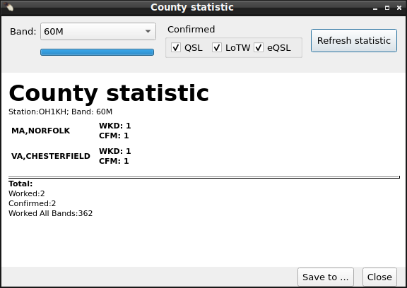